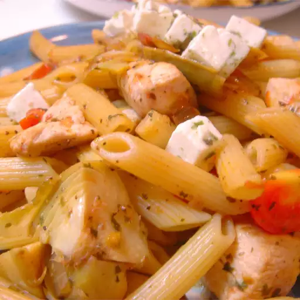

Greek Penne and Chicken

Description
This is one of my favorite 'stand by' recipes. I keep the ingredients on hand to make a quick, delicious, satisfying meal.
Ingredients
- 1 (16 ounce) package penne pasta
- 1 ½ tablespoons butter
- ½ cup chopped red onion
- 2 cloves garlic, minced
- 1 pound skinless, boneless chicken breast halves - cut into bite-size pieces
- 1 (14 ounce) can artichoke hearts in water
- 1 tomato, chopped
- ½ cup crumbled feta cheese
- 3 tablespoons chopped fresh parsley
- 2 tablespoons lemon juice
- 1 teaspoon dried oregano
- salt to taste
- ground black pepper to taste
Steps
- In a large pot with boiling salted water cook penne pasta until al dente. Drain.
- Meanwhile, in a large skillet over medium-high heat melt butter, add onion and garlic and cook for 2 minutes. Add chopped chicken and continue cooking, stirring occasionally until golden brown, about 5 to 6 minutes.
- Reduce heat to medium- low. Drain and chop artichoke hearts and add them, chopped tomato, feta cheese, fresh parsley, lemon juice, dried oregano, and drained penne pasta to the large skillet. Cook until heated through, about 2 to 3 minutes.
- Season with salt and ground black pepper. Serve warm.